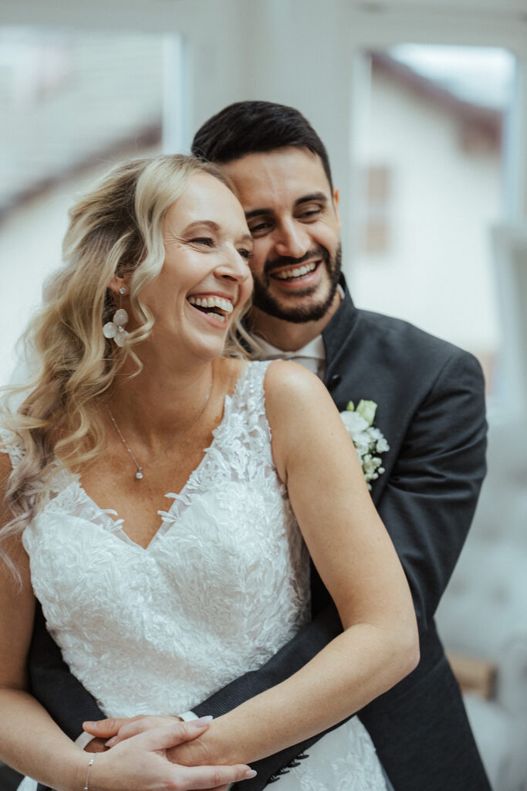
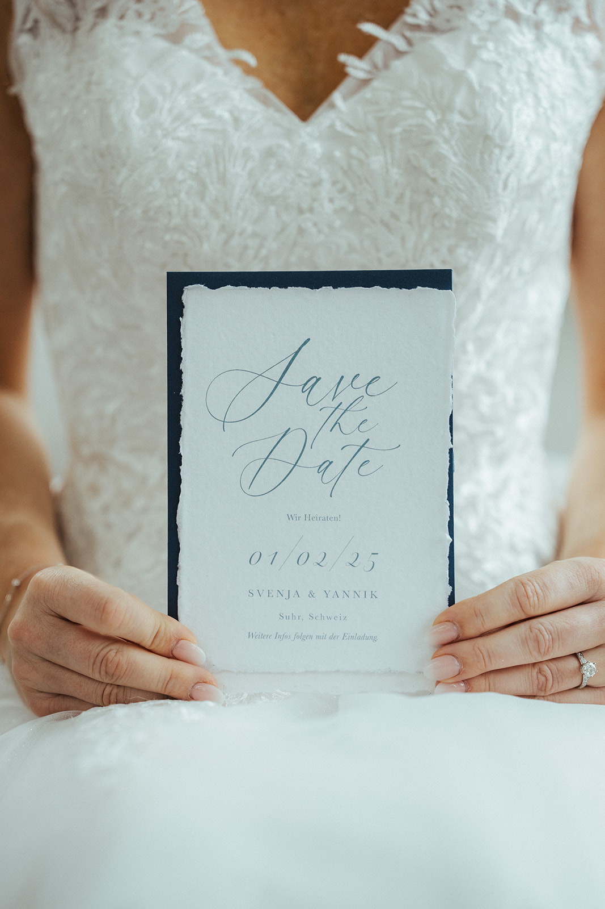
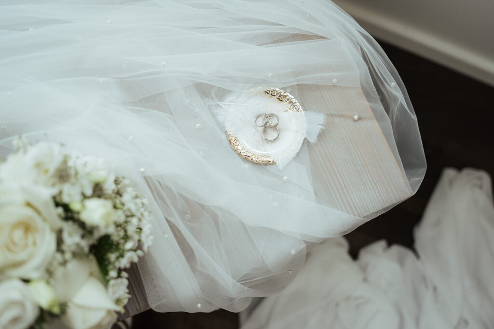
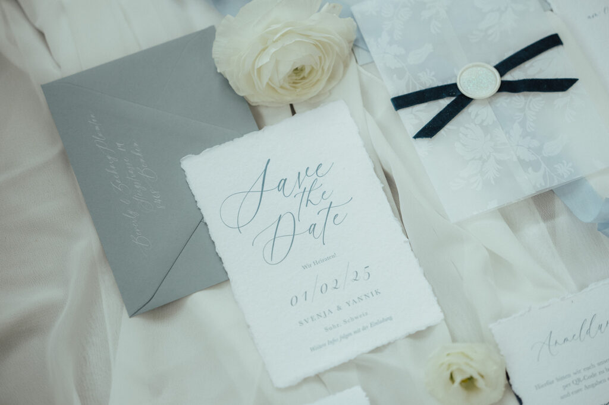

Die Verlobung ist perfekt, die Vorfreude riesig – doch dann beginnt die Hochzeitsplanung, und plötzlich fühlt es sich an, als würde eine Welle an Entscheidungen auf euch zukommen. In diesem Beitrag zeige ich euch die häufigsten Fehler bei der Hochzeitsplanung und gebe euch wertvolle Tipps.
1. Zu spät mit der Hochzeitsplanung beginnen
Viele Paare unterschätzen, wie früh Hochzeitslocations, Fotografen oder Caterer ausgebucht sind – besonders in den Sommermonaten. Wenn ihr eine bestimmte Location oder einen beliebten Dienstleister im Auge habt, solltet ihr mindestens 12–18 Monate im Voraus mit der Planung beginnen.
Tipp: Erstellt eine grobe Timeline mit den wichtigsten Deadlines. Die Location und den Fotografen solltet ihr als Erstes buchen, da sie oft weit im Voraus ausgebucht sind.

2. Das Hochzeitsbudget nicht realistisch kalkulieren
Ein klassischer Fehler: Die Ausgaben werden zu optimistisch eingeschätzt, und am Ende ist das Budget gesprengt. Viele Brautpaare vergessen versteckte Kosten wie Trinkgelder, Gebühren für die Eheschließung, Notfall-Extras oder den Transport für Gäste.
Tipp: Setzt euch eine realistische Budgetgrenze und plant mindestens 10–15 % Puffer für unvorhergesehene Kosten ein.
3. Zu viele Meinungen einholen
Es ist verständlich, dass Familie und Freunde ihre Meinung zu eurer Hochzeit haben – doch wenn ihr zu viele Menschen einbezieht, kann das schnell zu Unsicherheiten führen.
Tipp: Entscheidet als Paar, was euch wirklich wichtig ist, und lasst euch nicht von zu vielen Stimmen verunsichern. Eure Hochzeit, eure Regeln!


4. Keinen Plan B für schlechtes Wetter haben
Gerade in Süddeutschland und der Schweiz kann das Wetter unberechenbar sein. Stellt euch vor, ihr plant eine wunderschöne Outdoor-Trauung – und dann regnet es in Strömen.
Tipp: Wenn ihr eine Outdoor-Feier plant, sorgt frühzeitig für eine Schlechtwetter-Option – sei es ein Zelt, eine alternative Indoor-Location oder ein überdachter Bereich.
5. Die Gäste aus den Augen verlieren
Eure Hochzeit ist euer großer Tag – aber auch eure Gäste sollen sich wohlfühlen. Häufige Beschwerden sind zu lange Wartezeiten zwischen den Programmpunkten, unzureichende Sitzgelegenheiten oder zu wenig Essen und Getränke.
Tipp: Achtet auf eine gute Balance zwischen Zeremonie, Essen und Unterhaltung.
6. Alles selbst machen wollen
DIY ist toll – aber es kann auch extrem stressig werden. Viele Paare übernehmen sich mit selbstgemachter Deko, Gastgeschenken oder sogar der Organisation des gesamten Ablaufs.
Tipp: Setzt Prioritäten! Fragt euch: Macht es wirklich Sinn, alles selbst zu machen, oder wäre professionelle Hilfe entspannter?
7. Keine klare Tagesplanung haben
Ohne einen gut durchdachten Zeitplan kann eine Hochzeit schnell chaotisch werden.
Tipp: Erstellt einen detaillierten Tagesablauf und teilt ihn mit allen wichtigen Dienstleistern und Helfern.

8. Den eigenen Genuss vergessen
Viele Paare stecken so tief in der Organisation, dass sie den eigentlichen Hochzeitstag kaum genießen. Ständig sind sie mit kleinen Problemen beschäftigt, statt den Moment zu erleben.
Tipp: Übergebt die Koordination am Hochzeitstag an eine vertraute Person oder einen Hochzeitsplaner, damit ihr euch entspannen und euren Tag in vollen Zügen genießen könnt.
Fazit: Gute Planung = entspannte Hochzeit!
Mit der richtigen Vorbereitung könnt ihr die häufigsten Stolperfallen ganz einfach umgehen und euren großen Tag entspannt und sorgenfrei genießen.